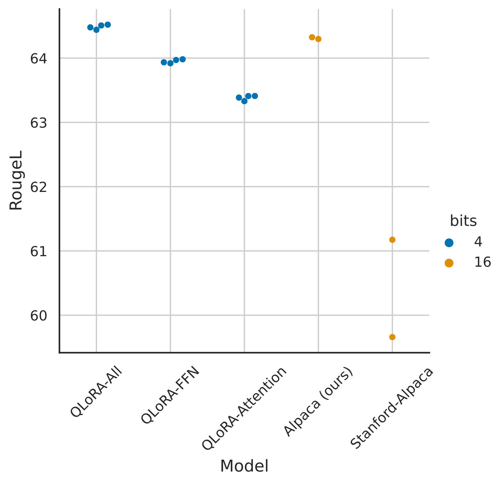

LoRA 技术总章：原理、权重选择、超参数与部署¶
简述：用可训练的低秩增量适配冻结模型；实际效果由适配位置、秩容量、缩放与优化共同决定。
范围：LLM 微调 / PEFT；跨论文原理与实践。
主要依据：LoRA、QLoRA、QA-LoRA、LoRA Without Regret、PEFT 官方文档。
模型 / 模态：以 Transformer 文本模型为主；多模态与 MoE 需按模块结构调整。更新：2026-10-19。
技术简介¶
LoRA 将任务变化写成低秩矩阵乘积，减少梯度、优化器状态和每个任务的存储，并可在浮点合并后沿用原模型结构。但少量参数能否完成任务，取决于增量的容量和作用位置，不能仅由“用了 LoRA”判断。本章从线性层和注意力/MLP 的作用解释目标矩阵选择，梳理 rank、alpha、学习率与初始化的关系，再比较 LoRA、QLoRA 和 QA-LoRA 在训练内存及部署合并上的差别。原始论文提供机制与实验依据，后续博客和框架文档补充现代后训练经验。文中的数值配方是小规模验证的起点；最优配置仍需在同一数据、预算和目标指标上比较。
LoRA 在模型里究竟改了什么¶
对冻结线性层 \(W_0\in\mathbb R^{d_{out}\times d_{in}}\)，加入
\(A\) 先将输入映射到 \(r\) 维，\(B\) 再映射回输出维；训练的是整个网络中这些增量分支。低秩限制针对 \(\Delta W=sBA\)，并不要求原始 \(W_0\) 低秩。不同任务可以共享同一基座，分别保存自己的适配器。

蓝色主干保存预训练变换，橙色分支学习任务变化。两者相加说明 LoRA 仍然在改变模型的计算结果；冻结基座既不意味着模型不会遗忘，也不意味着适配器只能“读取知识”。关闭未合并适配器可恢复对应原基座路径，适配状态下的通用能力仍需评测。
每个被适配的矩阵新增 \(r(d_{in}+d_{out})\) 个参数。主干不维护权重梯度与 Adam 状态，但它的权重、反向传播所需激活和算子仍占资源。长序列时，减少适配器参数不一定能解决显存瓶颈；梯度检查点、序列长度、batch 与注意力实现是另外的调节维度。
rank、alpha 和学习率分别控制什么¶
| 参数 | 直接控制的对象 | 调整时需要同时观察什么 |
|---|---|---|
| rank \(r\) | 每层增量的最大秩、适配器容量和参数量 | 覆盖位置、数据规模、训练步数、缩放约定 |
| alpha \(\alpha\) | 前向增量的缩放系数 \(s\) | 学习率、初始化、是否使用 rsLoRA |
| 学习率 \(\eta\) | 训练过程中 A/B 的更新步长 | 优化器、调度、batch、梯度裁剪 |
| 目标模块 | 哪些线性变换能够学习任务变化 | 总参数预算、架构、任务与部署支持 |
rank 是容量预算，不能按模型大小机械查表¶
更高的 \(r\) 提供更多独立更新方向，训练成本与适配器体积也随之增加。小秩对窄任务可能足够，但大数据、较长训练、复杂行为或更大分布变化，可能需要更大容量。只看很早的训练 loss，容易错过小秩在后期才出现的差距。
原始 LoRA 在 GPT-3 的 WikiSQL/MNLI 上观察到很小的秩已经有效；Thinking Machines 在 Tulu3、OpenThoughts3 等现代 SFT 数据上，则发现低秩方案可能随训练推进逐渐落后，较高秩更接近全量微调。两者的任务、模型、优化与训练量不同，不能把某个结论当成 rank 的普遍上限。
在一个已能正常训练的配置上，可用 \(r=8,16,32,64\) 作为第一轮候选，只运行其中符合预算的点；若验证效果仍随容量改善，再向上扩展。这个范围是搜索示例，不是来自单篇论文的统一最优值。若训练和验证都不足，应先检查损失掩码、学习率、目标模块和训练量，再判断是否需要加秩；训练提升而验证下降则更像泛化问题。
alpha 是训练参数化中的缩放，不是“风格强度”¶
原始 LoRA 使用 \(s=\alpha/r\)。例如 \(r=32,\alpha=32\) 时 \(s=1\)，改为 \(\alpha=64\) 时 \(s=2\)。在给定 A/B 的瞬间，增量输出确实翻倍；但若重新训练，A/B 的梯度和后续轨迹也随之变化，最终结果不会简单翻倍。
用最简单的 SGD 说明其耦合：设 \(G=\partial\mathcal L/\partial\Delta W\)，初始化 \(B_0=0\)，第一步有
这已说明训练中的缩放不仅出现在最终相加处。Adam/AdamW 的归一化、A/B 共同更新和正则又会改变关系，所以不能普遍用“alpha 翻倍等于学习率翻倍”替换实验。推理时给一个已训练适配器再乘系数是另一种操作，可能同时改变风格、事实和格式表现。
调参可以先固定一个有明确定义的 alpha 策略。例如在原始缩放下保持 \(\alpha/r=1\) 或 2，比较几个秩；随后在选定秩上比较缩放与学习率。保持比值只固定了显式乘数，不能保证不同秩有完全相同的更新统计或优化速度。跨论文复用配置时应同时记录 \(r,\alpha,s\)，只记 alpha 的数值没有可比性。
rsLoRA 改的是缩放约定，不能无条件沿用 alpha¶
rsLoRA 使用
来改善其分析和实验条件下的高秩稳定性。相同 \(r,\alpha\) 下，它与原始缩放相差 \(\sqrt r\) 倍：例如 \(r=64,\alpha=32\)，原始 \(s=0.5\)，rsLoRA 为 4。直接切换开关不是一次只改“稳定性”的对照，应该重新考虑 alpha 和学习率。
Thinking Machines 的文章则在原始 \(1/r\) 参数化、其初始化和优化设置下，观察并分析了不同秩早期学习曲线相近、最优学习率变化不大的现象。这与 rsLoRA 的渐近稳定性问题并非完全相同的实验命题。两条证据都提示：比较秩时必须写清初始化、优化器和缩放，而不是据一条口号排除另一种配置。
学习率需要单独搜索，A/B 也未必应共用一个值¶
Thinking Machines 在其所测设置中发现，高秩 LoRA 的较优学习率约为全量微调的十倍，且 \(r=4\) 至 512 的最优学习率变化小于两倍；这不能自动推广成所有模型使用 \(10^{-4}\)。其模型、数据、alpha=32、恒定学习率与比较损失的协议都属于结果条件。
对某个现代指令模型，可以围绕框架已有稳定配方，以 \(5\times10^{-5},10^{-4},2\times10^{-4}\) 这类对数尺度候选作小范围搜索；这里只提供实验起点，不声称已在当前数据上验证。提示微调论文中的 0.3 也不能移植为 LoRA 默认值。
LoRA+ 进一步对 A/B 使用不同学习率。它说明矩阵乘积的两部分存在优化不对称，但某个实验中的比值（如 16）仍是候选，而非任意模型必须启用的常数。初轮比较最好先建立稳定的普通 LoRA 基线，再逐个加入缩放、初始化或优化变体，避免同时改动太多因素。
训练哪些权重矩阵：先理解每一条路径¶
标准注意力写为
Q/K 改变位置之间的匹配和信息路由，V 改变被聚合的内容表示，O 改变注意力结果如何回到残差流。这只是解释矩阵作用的视角，并不是“改某一种能力只需训练对应单个矩阵”的严格分工。
典型门控 MLP 则可写为
它对每个位置的特征作非线性变换，通常占大量模型参数。训练 MLP 的低秩增量会改变特征变换和组合方式，不能把它看成注意力之后一个可忽略的附属模块。
| 目标集合 | 常见收益或用途 | 主要取舍 |
|---|---|---|
| Q、V | 原始 LoRA 中有效、适配器较小的基线 | 限制更新接口，现代 SFT 可能容量不足 |
| Q、K、V、O | 更完整地改变注意力路径 | 仍不直接适配 MLP，参数比 Q/V 多 |
| gate、up、down 等 MLP 投影 | 直接适配逐位置特征变换，现代 SFT 值得重点比较 | MLP 矩阵较宽，同秩不等于同参数预算 |
| 注意力 + MLP / all-linear | 提供较全面的更新路径 | 参数、状态和适配计算增加；需核对实际命中的模块 |
| 部分层 / 按层分配 rank | 在紧预算下选择层深和容量 | 最优分配依赖任务，易过拟合调参集 |
| embedding、lm_head、任务头 | 新词、输出空间或任务接口确实需要变化时 | 大词表可能明显增大 checkpoint；需要单独保存和部署 |
为什么不能只给 Q/V 加大 rank¶
原始 LoRA 将注意力作为研究范围，并不证明 MLP 无用。QLoRA 在 LLaMA/Alpaca 上发现，覆盖全部线性层是建立强十六位基线的重要因素；Thinking Machines 在其 SFT/RL 设置中发现，MLP-only 已经接近 MLP+attention，而 attention-only 即使提高秩、匹配参数预算仍落后。

原图强调适配位置与训练配方共同影响分数。它与后续博客的证据支持将 MLP 纳入对照，但不构成所有模型上固定的排序“MLP+注意力 > MLP > 注意力”。当输入编码、跨模态投影或特定对齐任务不同，这个排序可能改变。
同秩比较与同预算比较应分别回答¶
以 32 层、隐藏维 4096、MLP 中间维 11008、标准多头注意力的模型为示意，每层有 Q/K/V/O 四个 \(4096\times4096\) 矩阵，以及 gate/up/down 三个宽 MLP 矩阵。在 \(r=8\) 时：
| 目标集合 | 约新增参数 | 在相同 rank 下比较的含义 |
|---|---|---|
| Q/V | 4.19M | 最窄的更新接口 |
| 全注意力 | 8.39M | 相比 Q/V 增加 K/O |
| 三个 MLP 投影 | 11.60M | 直接适配非线性特征变换 |
| 注意力 + MLP | 19.99M | 同时扩展接口和总容量 |
这些数值来自形状估算，不是实测模型 checkpoint；GQA、不同 FFN 宽度、共享权重和模型包装会改变结果。比较 all-linear/r=8 与 QV/r=8，混合了位置和参数量两种变化；同预算实验则应调整各组 rank，并在每组内重新检查学习率。即使参数量相近，更新空间也不等价。
在实际框架中确认“训练了什么”¶
PEFT 支持 target_modules="all-linear"、显式模块后缀及按层的 rank_pattern / alpha_pattern。all-linear 是框架的匹配规则：不能仅凭这个字符串就认为 embedding、所有输出头、MoE 参数或跨模态模块全部被适配。标准模型输出层可能被排除；专家权重有时直接存为参数，需使用受支持的 target_parameters 或专门实现。
模型接入后，应查看实际匹配的模块名、形状、可训练参数与保存对象。QKV 融合层可能将三类投影放进一个矩阵；LLaMA 类模块名也不能直接复制给 GPT、视觉骨干或不同 MoE。modules_to_save 表示额外训练/保存的完整模块，与 LoRA 低秩分支不是同一类参数；新建分类头、词表变化和权重绑定需要单独处理。
初始化、dropout、batch 与数据的相互影响¶
原始论文令 A 随机高斯、B 为零；PEFT 常用 Kaiming-uniform 初始化 A、B 为零。两者都让起始增量为零，但不是同一个随机分布。两者同时置零会让基本 LoRA 的梯度无法启动。PiSSA、EVA、LoftQ 等改变初始化或与量化误差的关系，也会改变对照条件，不能与默认初始化的训练结果直接混在一起。
LoRA dropout 作用在适配分支的输入路径，用于正则；是否有用取决于数据量、模型和训练长度。0、0.05、0.1 可以构成候选集，但不是每个任务都必须加。过拟合时还需检查重复样本、epoch、学习率与验证拆分。
有效 batch 由每卡 batch、梯度累积和数据并行规模共同决定，但不同序列长度下，样本数相同并不意味着 token 数相同。Thinking Machines 在部分设置中观察到 LoRA 对大 batch 更敏感，而且增秩不能消除差距；遇到优化不足，减少 batch、增加更新次数可能比只增加 rank 更值得尝试。短试验的最优学习率也可能不同于完整训练，不能只用几个早期 step 选最终配方。
数据和损失定义常常比超参更先决定结果。回答格式、特殊 token、截断、padding、是否只在助手回复上计损失，都需要与任务一致。训练 loss 下降并不证明目标能力改善；还应固定任务评测、通用能力回归和必要的长输入测试。LoRA 训练的是何种行为，取决于数据和目标，它本身不是某种特定的 SFT、DPO 或 RL 算法。
LoRA、QLoRA 与 QA-LoRA 如何选择¶

图中的绿色梯度仍经过冻结主干；四位基座降低权重存储，适配器和优化器仍使用较高精度。分页缓解峰值，不能替代激活管理，也不会无代价地消除显存上限。
| 路线 | 适合优先考虑的瓶颈 | 部署时的关键问题 |
|---|---|---|
| 浮点基座 + LoRA | 训练状态、任务 checkpoint 与多适配器复用 | 可浮点合并；未合并的多适配器需要运行时支持 |
| QLoRA | 冻结基座权重本身放不下 | 可保留量化基座 + 浮点分支；再量化合并可能有误差 |
| QA-LoRA | 希望训练后直接得到特定分组低位合并表示 | 需要匹配分组量化、池化及浮点偏移约定，后端兼容性更关键 |
QLoRA 的 NF4、双重量化和分页优化器分别针对表示误差、尺度开销与峰值状态。QA-LoRA 通过限制组内更新形式，将适配器吸收到量化偏移，并不等于任何 NF4/INT4 模型都能直接无损合并普通 LoRA。三者的详细原理和原论文实验分别在对应 Paper 阅读页展开。
若浮点基座已经可训练，先建立浮点 LoRA 基线有利于分清量化误差和适配能力；如果必须量化，再用相同目标层和评测检查精度变化。显存报告至少写清上下文长度、有效 token batch、激活检查点和优化器。训练省显存也不保证推理加速，反量化、未合并分支及服务内核都可能影响吞吐。
一个可解释的实验起点¶
以下只展示参数含义和搜索顺序，不是已运行的训练配方：
from peft import LoraConfig, TaskType, get_peft_model
config = LoraConfig(
task_type=TaskType.CAUSAL_LM,
r=16,
lora_alpha=32, # 原始缩放下 s = 2
lora_dropout=0.05,
target_modules="all-linear",
bias="none",
use_rslora=False,
)
model = get_peft_model(base_model, config)
model.print_trainable_parameters()
先确保模型、数据格式与损失正确，再用小预算比较 Q/V、MLP、all-linear 等位置；在可接受的位置上比较若干 rank，并明确 alpha 随 rank 如何变化；之后联合检查 alpha 与学习率，最后才引入新的初始化、A/B 异学习率或分层预算。每轮优先回答一个具体问题，保留表现稳定且可解释的对照。
若目标主要是格式、风格或窄任务，不必因为大模型就直接上高秩；若训练量增加后低秩持续落后，则应扩大容量或比较全量微调。评测差距如果来自目标层不覆盖关键路径、数据掩码错误或低位误差，提高 rank 无法一并解决。
合并与多适配器服务¶
浮点部署可计算 \(W_{merge}=W_0+sBA\)，删除独立适配分支；其线性层形状不变，额外 LoRA 乘法消失。多租户服务通常保留共享基座与各自适配器，用专门内核执行不同请求的更新；这时 rank、目标模块与并发模式都会影响实际延迟和显存。
合并后应检查基座版本、tokenizer、特殊 token、任务头与量化约定。相同浮点表示下的合并只是代数等价，数值舍入仍可能有微小差异；重新量化则可能产生更明显误差。训练结束、适配器加载、合并模型和生产推理的评测最好使用同一组代表输入，发现差异时先定位是哪一步发生变化。
论文研读与参考资料¶
- LoRA 论文中文研读：摘要译文、低秩形式、GPT-3 资源账、目标矩阵与秩消融、子空间分析。
- QLoRA 论文中文研读：NF4/DQ/分页、数据配方、Guanaco、人工与模型评测边界。
- QA-LoRA 论文中文研读：分组自由度、合并证明、低位实验与实现条件。
- 提示微调综述：Prompt、Prefix、P-Tuning v1/v2 与其他 PEFT 接口。
- Thinking Machines Lab / John Schulman：LoRA Without Regret，2025-09；现代 SFT/RL 中的位置、容量、学习率和 batch。
- PEFT LoRA 开发指南、LoraConfig API，2026-10-19 查阅；匹配规则、初始化、缩放和保存接口。
- rsLoRA、LoRA+：进一步理解缩放和优化；本文不把单篇设置作为统一默认配方。
- Hugging Face：四位 bitsandbytes 与 QLoRA，2023-05-24；存储类型、计算精度和量化配置。